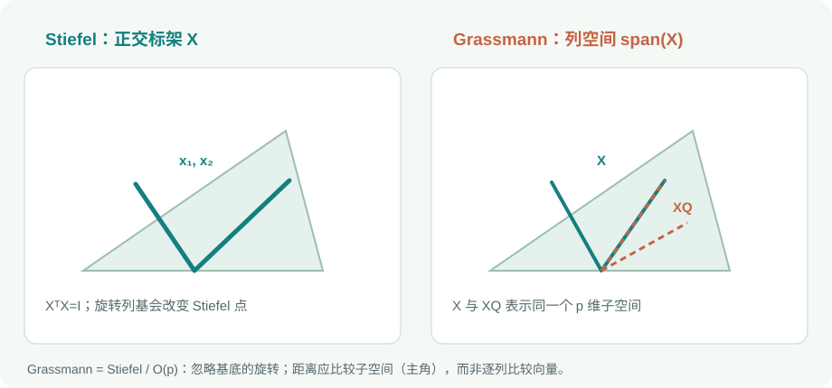
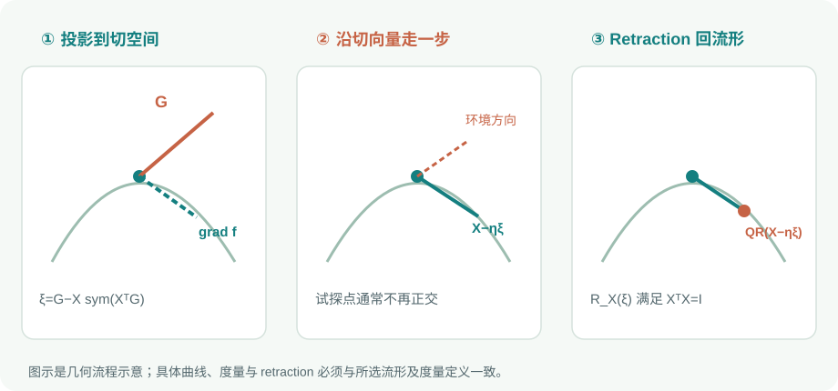

01 / Stiefel 流形：把正交约束当作搜索空间
许多任务需要学习一个正交列基：降维投影、子空间估计、正交滤波器或特征向量组。若变量 X∈R^{n×p} 必须满足 XᵀX=Iₚ，它不是整个欧氏矩阵空间中的任意点，而位于 Stiefel 流形上。
列正交矩阵的自由度为 np−p(p+1)/2。因为 XᵀX 是对称矩阵，等式约束包含 p(p+1)/2 个独立标量条件。若 n=p，Stiefel 就是正交群 O(p)；若 p=1，则它退化为单位球面。
把每一步都写成普通梯度下降再“修补正交性”，会忽略可行方向的几何结构。流形优化在当前点的切空间中选择下降方向，再用 retraction 把更新带回可行集合。
02 / 切空间：微分约束得到一阶可行方向
取一条可微曲线 X(t) 位于 Stiefel 上，且 X(0)=X、X′(0)=Ξ。对恒等式 X(t)ᵀX(t)=I 求导，得到切向量的线性约束。反过来，满足该约束的 Ξ 都是 X 处的切向量。
在环境空间的 Frobenius 内积下，投影算子将任意矩阵 G 分解为切向部分与法向部分：
这个投影公式依赖所选度量。本文使用嵌入欧氏（Frobenius）度量；Stiefel 上的 canonical metric 会给出不同的 Riemannian gradient 表达式，不能混用两套公式。
03 / Grassmann 流形：同一子空间不应重复计数
如果目标只关心 X 的列空间，而不关心列基底的具体旋转，那么 X 和 XQ（Q∈O(p)）应代表同一个点。Grassmann 流形就是把 Stiefel 的正交基底按右乘正交群取商，表示所有 p 维子空间。

在常用的水平表示下，Grassmann 梯度是 (I−XXᵀ)G，它自动与当前子空间正交。两个子空间之间的自然距离由主角（principal angles）描述，而不是逐列比较 X 和 Y 的符号或顺序。
04 / 指数映射与 Retraction：精确走测地线还是便宜地回到流形？
指数映射沿着给定切向量的测地线精确前进，但对 Stiefel 通常需要额外矩阵分解和指数运算。Retraction 只需在零向量附近与指数映射具有相同的一阶局部行为，便可作为数值优化中的高效替代。
QR retraction 取 QR 分解中的正交 Q 因子；实现时应固定 R 对角线符号约定以减少表示跳变。Polar retraction 取极分解中的正交因子。二者都要求 X+Ξ 满列秩；若步长太大或数值退化，需回溯或减小步长。

05 / Riemannian 梯度下降：每一步都遵守几何约束
设目标 f 在流形上可微，欧氏梯度为 G。先通过所选度量把 G 投影成 Riemannian 梯度，再沿负梯度走步，最后 retract。η 可通过 Armijo 回溯等线搜索选择；若采用共轭梯度或信赖域方法，还需要向量传输与 Riemannian Hessian 等额外工具。
经典测试目标是对称矩阵 A 的 Rayleigh–Ritz 子空间问题：最小化 tr(XᵀAX) 且 XᵀX=I。全局最优列空间由 A 的最小 p 个特征值对应的不变子空间张成（若在截断位置存在谱间隙则子空间唯一）。目标非凸，局部算法的初值和停止准则仍然重要。
06 / 复算：验证切向约束，而不是只看 XᵀX 是否接近 I
取 X=[[1,0],[0,1],[0,0]]，环境梯度 G=[[1,2],[3,4],[5,6]]。按嵌入欧氏度量投影得到 Ξ=[[0,−0.5],[0.5,0],[5,6]]，并有 XᵀΞ=[[0,−0.5],[0.5,0]]，它是斜对称矩阵，满足切空间条件。
import math
# X has orthonormal columns; G is an ambient Euclidean gradient.
X = ((1.,0.),(0.,1.),(0.,0.))
G = ((1.,2.),(3.,4.),(5.,6.))
XtG = ((1.,2.),(3.,4.))
sym = ((1.,2.5),(2.5,4.))
Xi = tuple(tuple(G[i][j] - sum(X[i][k]*sym[k][j] for k in range(2))
for j in range(2)) for i in range(3))
XtXi = tuple(tuple(sum(X[k][i]*Xi[k][j] for k in range(3))
for j in range(2)) for i in range(2))
assert XtXi == ((0.,-.5),(.5,0.))
assert abs(XtXi[0][1]+XtXi[1][0]) < 1e-12
# For X_eta = X - eta*Xi, the first-order constraint defect vanishes;
# the remaining Gram error is eta^2 * Xi.T @ Xi.
eta=.1
gram_error = eta**2 * math.sqrt(25.25**2 + 36.25**2 + 2*30**2)
assert gram_error > 0
print("tangent condition verified; pre-retraction Gram defect =",gram_error)预期：切空间残差为零；有限步长的试探矩阵存在二阶 Gram 误差，retraction 再将其恢复为列正交矩阵。数值库中请直接使用经过验证的 QR 或 polar retraction，不要手工做不稳定的列归一化。
参考资料与进一步阅读
- Pymanopt：Stiefel、Grassmann、切空间、retraction 接口
- Absil, Mahony & Sepulchre (2008), Optimization Algorithms on Matrix Manifolds
- Boumal (2023), An Introduction to Optimization on Smooth Manifolds
- Manopt：Riemannian optimization toolbox and examples
数值示例只验证所给输入下的代数关系；它们不构成对任意数据集的全局收敛或恢复保证。